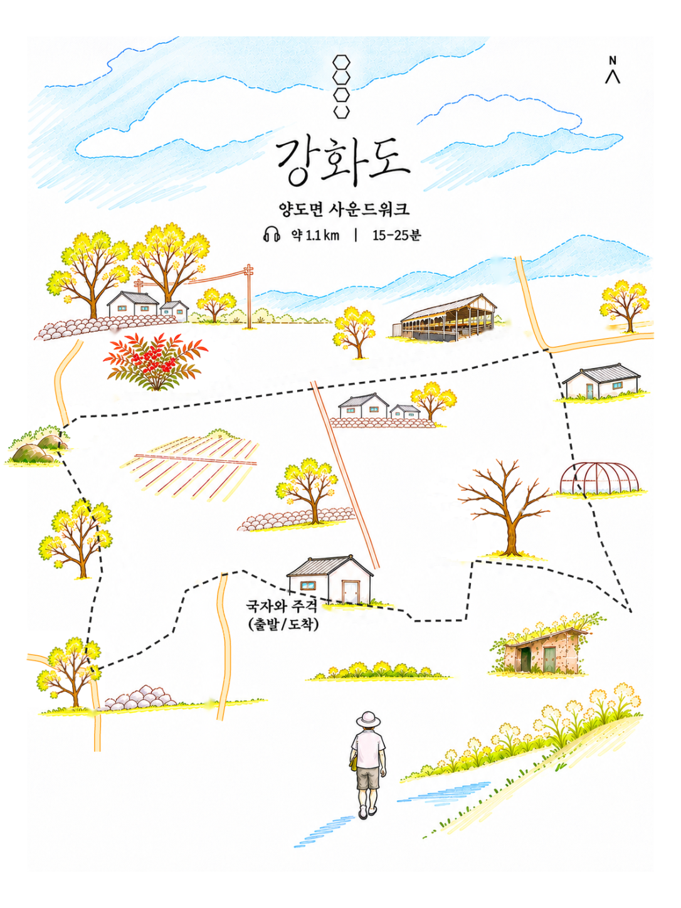

GPS 테스트 시작을 누르고 위치 권한을 허용해 주세요. 산책길을 따라 현재 위치가 파란 점으로 표시되고, 각 지점에 도착하면 해당 음원이 재생됩니다.
아직 GPS를 시작하지 않았습니다.
휴대전화의 위치 정확도에 따라 점의 위치와 도착 판정에 오차가 생길 수 있습니다. 화면을 켜 둔 상태로 사용해 주세요. iPhone Safari에서 자동 재생이 차단되면 표시되는 재생 버튼을 눌러 주세요.

GPS 테스트 시작을 누르고 위치 권한을 허용해 주세요. 산책길을 따라 현재 위치가 파란 점으로 표시되고, 각 지점에 도착하면 해당 음원이 재생됩니다.